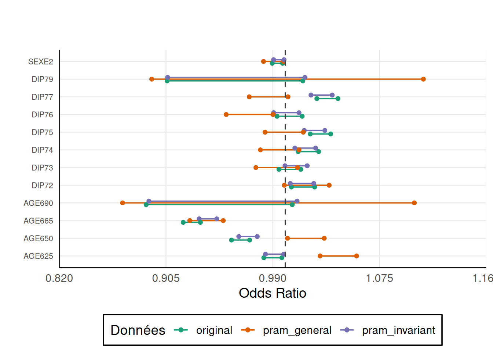

Code
library(dplyr)
library(sdcMicro)Insee, Département des Méthodes Statistiques
Nous allons étudier un extrait des données de l’Enquête emploi en continu de l’Insee.
Classes 'data.table' and 'data.frame': 34053 obs. of 16 variables:
$ REG : Factor w/ 4 levels "11","28","76",..: 2 2 2 2 1 1 1 1 1 3 ...
$ DEP : Factor w/ 28 levels "09","11","12",..: 19 19 19 19 25 25 26 21 21 9 ...
$ ARR : Factor w/ 83 levels "091","092","093",..: 53 53 53 53 73 73 75 62 62 27 ...
$ SEXE : Factor w/ 2 levels "1","2": 1 2 2 1 1 2 2 1 2 1 ...
$ AGE : int 53 43 17 17 42 54 57 20 17 28 ...
$ AGE6 : Factor w/ 5 levels "15","25","50",..: 3 2 1 1 2 3 3 1 1 2 ...
$ ACTEU : Factor w/ 3 levels "1","2","3": 1 1 3 3 1 1 1 3 3 1 ...
$ DIP7 : Factor w/ 9 levels "1","2","3","4",..: 4 7 5 4 7 7 7 7 7 5 ...
$ PCS1Q : Factor w/ 10 levels "0","10","20",..: 4 7 10 10 9 9 7 10 10 8 ...
$ ANCCHOM : Factor w/ 10 levels "1","2","3","4",..: 10 10 10 10 10 10 10 10 10 10 ...
$ HHID : int 3558 3558 3558 3558 5973 5973 6779 4906 4906 1135 ...
$ HH_TAILLE: Factor w/ 22 levels "1","2","3","4",..: 4 4 4 4 2 2 1 2 2 3 ...
$ HH_AGE : Factor w/ 90 levels "15","16","17",..: 39 39 39 39 40 40 43 6 6 14 ...
$ HH_DIP : Factor w/ 9 levels "1","2","3","4",..: 4 4 4 4 7 7 7 7 7 5 ...
$ HH_PCS : Factor w/ 10 levels "0","10","20",..: 4 4 4 4 9 9 7 10 10 8 ...
$ IS_CHOM : int 0 0 0 0 0 0 0 0 0 0 ...
- attr(*, ".internal.selfref")=<externalptr> On y trouve les variables suivantes :
DEP : département de résidenceSEXE : sexe (1 = homme, 2 = femme)AGE : âge de l’individuAGE6 : âge en 5 tranches (15 = 15-25, 25 = 25-49, 50 = 50-64, 65 = 65-89, 90 = 90 ans ou plus)ACTEU : statut d’activité (1 = emploi, 2 = chômage, 3 = inactivité)DIP7 : diplôme le plus élevé obtenu (1 = bac+5 ou plus, 2 = bac +3/4, 3 = bac+2, 4 = bac, 5 = CAP, 6 = brevet, 7 = aucun diplôme, 9 = non réponse)PCS1Q : emploi principal (10 = agriculteurs, 20 = artisans, 30 = cadres, 40 = professions intermédiaires, 51 = employés qualifiés, 52 = employés peu qualifiés, 61 = ouvriers qualifiés, 62 = ouvriers peu qualifiés, 00 = non codé, 99 = non réponse)ANCCHOM : ancienneté au chômageHHID : identifiant du clusterPOIDS : poids de sondageDans cette fiche on s’intéressera à la variable ACTEU. Pour une meilleure compréhension on recode ses modalités.
La l-diversité semble être une mesure de risque adéquate pour savoir s’il faut appliquer PRAM. En effet, elle nous indique si certaines modalités d’une variable catégorielle sont peu représentées dans la population (ou l’échantillon).
Une classe d’équivalence (ensemble de lignes ayant les mêmes quasi-identifiants) est l-diverse si elle contient au moins l valeurs bien distinctes de la variable confidentielle.
key_vars1 <- c("DEP", "SEXE", "AGE6", "DIP7") # quasi-identifiants
sdc_object1 <- createSdcObj(
dat=lfs_2023,
keyVars=key_vars1,
hhId = "HHID",
# weightVar = "POIDS",
sensibleVar = "ANCCHOM",
pramVars = "ACTEU",
seed = 20061789
)
sdc_object_ldiv <- ldiversity(sdc_object1,ldiv_index = "ACTEU")
sdc_object_ldiv@risk$ldiversity--------------------------L-Diversity Measures -------------------------- Min. 1st Qu. Median Mean 3rd Qu. Max.
1.000 2.000 2.000 2.325 3.000 3.000 On voit que pour chacune des combinaisons il y a entre 1 et 3 valeurs de ACTEU différentes. La moitié des observations ont un l-diversité de 1 ou 2 (médiane = 2). Le fichier n’est pas assez protégé.
risk fk Fk hier_risk
[1,] 0.02777778 36 36 0.40027671
[2,] 0.04166667 24 24 0.40027671
[3,] 0.33333333 3 3 0.40027671
[4,] 0.03448276 29 29 0.40027671
[5,] 0.04000000 25 25 0.06086957
[6,] 0.02173913 46 46 0.06086957La colonne fk donne, pour chaque combinaison unique de DEP, SEXE, AGE6 et DIP7, le nombre d’individus dans l’échantillon. Et Fk infère le nombre d’individus dans la population pour ces mêmes combinaisons. Ici, on travaille sur un jeu de données exhaustifs (pas de poids de sondages) donc fk = Fk.
La méthode de protection des données PRAM est une méthode perturbatrice appliquée sur les microdonnées. Elle permet d’intervertir les modalités d’une variable catégorielle sensible pour certains individus afin qu’un attaquant ne puisse pas savoir s’il s’agit du veritable effectif ou non.
La matrice de transition présente la probabilité qu’une modalité soit changée en une autre pour tous les changements possibles.
emploi chomage inactif
emploi 0.7 0.2 0.1
chomage 0.3 0.6 0.1
inactif 0.1 0.1 0.8Dans cet exemple, la probabilité qu’un individu en emploi reste en emploi est de 70%, alors que la probabilité qu’un individu en emploi passe au chômage est de 20%.
On appelle la fonction pram() et on précise la matrice de transition avec le paramètre pd.
Variable: ACTEU
----------------------
Frequencies in original and perturbed data: ACTEU emploi chomage inactif NA
<char> <char> <char> <char> <char>
1: Original Frequencies 16878 1362 15813 0
2: Frequencies after Perturbation 13785 5784 14484 0
Transitions: transition Frequency
<char> <int>
1: 1 --> 1 11846
2: 1 --> 2 3392
3: 1 --> 3 1640
4: 2 --> 1 372
5: 2 --> 2 855
6: 2 --> 3 135
7: 3 --> 1 1567
8: 3 --> 2 1537
9: 3 --> 3 12709Le summary() renvoit les informations principales sur les modifications des microdonnées. On voit la réalisation des échanges de modalités en comparant les fréquences avant et après perturbation.
On peut calculer la matrice de transition empirique de l’application de PRAM.
# A tibble: 3 × 4
# Groups: ACTEU [3]
ACTEU PRAM_emploi PRAM_chomage PRAM_inactif
<fct> <dbl> <dbl> <dbl>
1 emploi 70.2 20.1 9.72
2 chomage 27.3 62.8 9.91
3 inactif 9.91 9.72 80.4 Une fois que le jeu de données est perturbé, il est nécessaire de comparer des indicateurs avant et après la perturbation. Cet aspect d’analyse de la perte d’utilité sera développé dans le paragraphe dédié.
# ATTENTION ce type de PRAM n'est pas invariant: les estimatons sont biaisées
# Calcul du taux de chômage
lfs_2023 %>%
summarise(
taux_chomage = sum(ACTEU == "chomage")/sum(ACTEU %in% c("emploi","chomage")) *100,
taux_chomage_pram = sum(ACTEU_pram1 == "chomage")/sum(ACTEU_pram1 %in% c("emploi","chomage")) *100
) taux_chomage taux_chomage_pram
1 7.467105 29.55695La perturbation injectée par l’utilisation de pram modifie grandement le taux de chômage : 7 dans les données originales, et 30 dans les données protégées. Les estimations sont biaisées.
Dans 75% des cas (i.e. des lignes du fichier), le statut d’activité dans le fichier original est le même que celui dans le fichier modifié avec pram.
Une variante de pram permet d’obtenir des estimateurs non-biaisés : le pram invariant.
Les post odds sont des mesures de risque que l’on calcule a posteriori, une fois que pram est appliqué.
On rappelle la formule présentée dans la partie théorique : \[POST\_ODDS(k) = \frac{P(\xi = k|X=k)}{P(\xi \neq k|X=k)} = \frac{p_{kk}P(\xi = k)}{\sum_{l \neq k}p_{lk}P(\xi=l)}\]
\(p_{kk}\) la probabilité que la modalité de ACTEU d’une observation dans le fichier perturbé soit la même que dans le fichier original.
\(\sum_{l \neq k}p_{lk}\) la probabilité que la modalité de ACTEU d’une observation dans le fichier perturbé soit différente que celle du fichier original.
\(P(\xi = k)\) est estimé par \(T_{\xi}(k)\) la fréquence de cette modalité dans les données originales.
post_odds <- function(donnees_perturbees,var_orig,var_pram){
# 1. Estimer la matrice de transition
# Fréquences conditionnelles P(ACTEU_pram = k | ACTEU = l)
mat_transition <- donnees_perturbees %>%
count(!!sym(var_orig), !!sym(var_pram), name = "n") %>%
group_by(!!sym(var_orig)) %>%
mutate(p_lk = n / sum(n)) %>%
ungroup()
# Estimer les marges
marges <- donnees_perturbees %>%
count(!!sym(var_orig), name = "n_l") %>% # n_l, le nombre d’occurrences de chaque valeur
# originale l
mutate(T_l = n_l / sum(n_l)) # T_l fréquence de la modalité l dans les données
# originales
# 3. Calculer les post-odds pour chaque modalité de k
# Fusionner les infos de transition et de marges
base_postodds <- mat_transition %>%
left_join(marges, by = setNames(var_orig, var_orig)) # ajoute P_l à chaque ligne
# Liste des valeurs PRAM possibles (= valeurs de k)
valeurs_k <- donnees_perturbees %>% pull(!!sym(var_pram)) %>% unique()
# Calcul des post-odds pour chaque k
post_odds_result <- purrr::map_dfr(valeurs_k, function(k) {
df_k <- base_postodds %>%
filter(!!sym(var_pram) == k)
numerateur <- df_k %>%
filter(!!sym(var_orig) == k) %>%
summarise(num = p_lk * T_l) %>%
pull(num)
denominateur <- df_k %>%
filter(!!sym(var_orig) != k) %>%
summarise(den = sum(p_lk * T_l)) %>%
pull(den)
tibble(
valeur_pram = k,
post_odds = ifelse(denominateur == 0, NA, numerateur / denominateur)
)
})
return(post_odds_result)
}
post_odds(lfs_2023,"ACTEU","ACTEU_pram1")# A tibble: 3 × 2
valeur_pram post_odds
<fct> <dbl>
1 chomage 0.173
2 inactif 7.16
3 emploi 6.11 La modalité “chomage” est inférieur à 1, donc quand une observation a la modalité “chomage” dans le fichier perturbé elle ne l’est sans doute pas dans le fichier original. Ce n’est pas le cas pour “inactif” et “emploi”.
Variable: ACTEU
----------------------
Frequencies in original and perturbed data: ACTEU emploi chomage inactif NA
<char> <char> <char> <char> <char>
1: Original Frequencies 16878 1362 15813 0
2: Frequencies after Perturbation 16847 1382 15824 0
Transitions: transition Frequency
<char> <int>
1: 1 --> 1 16283
2: 1 --> 2 155
3: 1 --> 3 440
4: 2 --> 1 133
5: 2 --> 2 1105
6: 2 --> 3 124
7: 3 --> 1 431
8: 3 --> 2 122
9: 3 --> 3 15260On peut voir la matrice de transition qui a été générée à partir de pd = 0.8.
emploi chomage inactif
emploi 0.96411739 0.009017262 0.02686535
chomage 0.11174255 0.797453779 0.09080367
inactif 0.02867472 0.007821071 0.96350421Chaque élément de la diagonale vaut au moins 0.8, les autres probabilités sont distribuées de manière uniforme. Toutes les lignes somment à 1.
mean(ACTEU == ACTEU_pram2)
1 0.9587408Dans 96% des cas, le statut d’activité dans le fichier original est le même que celui dans le fichier modifié avec pram.
Le taux de chômage dans l’échantillon est-il biaisé ?
taux_chomage taux_chomage_pram
1 NaN NaNLe taux de chômage dans les données originales est de 7.4% et il est de 7.5% dans les données modifiées par pram. L’utilisation d’un pram invariant permet de conserver des marges proches de celles originales sur la variable modifiée.
Il existe un de nombreuses façons d’estimer l’utilité des données perturbées, la mesure que l’on choisit dépend de ce qu’on souhaite faire avec les données perturbées.
Ici, imaginons que l’on souhaite expliquer le chômage à partir des données. On va étudier l’impact des deux PRAM réalisés sur les coefficients d’une régression cherchant à expliquer le chômage.
La variable IS_CHOM est une indicatrice du chômage déjà présente dans les données. Cependant, IS_CHOM découle directement de ACTEU il faut donc créer une nouvelle variable IS_CHOM à partir de la variable modifiée ACTEU_pram1 (ou ACTEU_pram2).
Lorsque des variables sont corrélées à la variable perturbée par PRAM, il faut recréer ces variables à partir de la variable perturbée (et supprimer les variables corrélées à la variable originale).
source('../R/fun_cio.R')
mod_orig <- glm(IS_CHOM ~ SEXE + AGE6 + DIP7, data = lfs_2023)
mod_pram1 <- glm(IS_CHOM_pram1 ~ SEXE + AGE6 + DIP7, data = lfs_2023)
mod_pram2 <- glm(IS_CHOM_pram2 ~ SEXE + AGE6 + DIP7, data = lfs_2023)
all_cios <- get_all_confints(list("original" = mod_orig, "pram_general" = mod_pram1, "pram_invariant" = mod_pram2))Joining with `by = join_by(vars)`# A tibble: 6 × 8
modele vars low up low_orig up_orig cio num
<chr> <chr> <dbl> <dbl> <dbl> <dbl> <dbl> <dbl>
1 original AGE625 0.983 0.997 0.983 0.997 1 0.9
2 pram_general AGE625 1.03 1.06 0.983 0.997 -1.59 1
3 pram_invariant AGE625 0.984 0.999 0.983 0.997 0.902 1.1
4 original AGE650 0.957 0.972 0.957 0.972 1 1.9
5 pram_general AGE650 1.00 1.03 0.957 0.972 -1.56 2
6 pram_invariant AGE650 0.963 0.978 0.957 0.972 0.594 2.1Loading required package: ggplot2
Ce graphique nous permet de comparer les intervalles de confiance à 95% des odds ratio des différents modèles. On voit que les odds ratio du modèle original et du pram invariant ont toujours la même significativité.
En revanche, pour la modalité DIP77 par exemple, l’odds ratio du pram général n’est pas significativement différent de 1 au seuil de 5% alors qu’il l’est dans le modèle à partir des données originales.
Ainsi, le pram général protège bien les données mais les perturbe beaucoup ce qui empêche de faire de bonnes analyses.
---
title: Appliquer PRAM
---
```{r}
#| eval: false
#| echo: false
setwd("./pratique/fiches")
```
```{r warning=FALSE, message=FALSE}
library(dplyr)
library(sdcMicro)
```
# Les données
```{r}
source("../R/fun_import_data.R")
lfs_2023 <- import_lfs()
```
Nous allons étudier un extrait des données de l'Enquête emploi en continu de l'Insee.
```{r}
str(lfs_2023)
```
On y trouve les variables suivantes :
- `DEP` : département de résidence
- `SEXE` : sexe (1 = homme, 2 = femme)
- `AGE` : âge de l'individu
- `AGE6` : âge en 5 tranches (15 = 15-25, 25 = 25-49, 50 = 50-64, 65 = 65-89, 90 = 90 ans ou plus)
- `ACTEU` : statut d'activité (1 = emploi, 2 = chômage, 3 = inactivité)
- `DIP7` : diplôme le plus élevé obtenu (1 = bac+5 ou plus, 2 = bac +3/4, 3 = bac+2, 4 = bac, 5 = CAP, 6 = brevet, 7 = aucun diplôme, 9 = non réponse)
- `PCS1Q` : emploi principal (10 = agriculteurs, 20 = artisans, 30 = cadres, 40 = professions intermédiaires, 51 = employés qualifiés, 52 = employés peu qualifiés, 61 = ouvriers qualifiés, 62 = ouvriers peu qualifiés, 00 = non codé, 99 = non réponse)
- `ANCCHOM` : ancienneté au chômage
- `HHID` : identifiant du cluster
- `POIDS` : poids de sondage
Dans cette fiche on s'intéressera à la variable `ACTEU`. Pour une meilleure compréhension on recode ses modalités.
```{r}
lfs_2023$ACTEU <- forcats::fct_recode(lfs_2023$ACTEU,
emploi = "1",
chomage = "2",
inactif = "3"
)
```
# Mesurer le risque
La **l-diversité** semble être une mesure de risque adéquate pour savoir s'il faut appliquer PRAM. En effet, elle nous indique si certaines modalités d'une variable catégorielle sont peu représentées dans la population (ou l'échantillon).
Une **classe d’équivalence** (ensemble de lignes ayant les mêmes quasi-identifiants) est l-diverse si elle **contient au moins l valeurs bien distinctes de la variable** confidentielle.
```{r}
key_vars1 <- c("DEP", "SEXE", "AGE6", "DIP7") # quasi-identifiants
sdc_object1 <- createSdcObj(
dat=lfs_2023,
keyVars=key_vars1,
hhId = "HHID",
# weightVar = "POIDS",
sensibleVar = "ANCCHOM",
pramVars = "ACTEU",
seed = 20061789
)
sdc_object_ldiv <- ldiversity(sdc_object1,ldiv_index = "ACTEU")
sdc_object_ldiv@risk$ldiversity
```
On voit que pour chacune des combinaisons il y a entre 1 et 3 valeurs de `ACTEU` différentes. La moitié des observations ont un l-diversité de 1 ou 2 (médiane = 2). Le fichier n'est pas assez protégé.
```{r}
risque_ind_original <- sdc_object1@originalRisk$individual
head(risque_ind_original)
```
La colonne `fk` donne, pour chaque combinaison unique de DEP, SEXE, AGE6 et DIP7, le nombre d'individus dans l'échantillon. Et `Fk` infère le nombre d'individus dans la population pour ces mêmes combinaisons. Ici, on travaille sur un jeu de données exhaustifs (pas de poids de sondages) donc `fk` = `Fk`.
# Appliquer PRAM
La méthode de protection des données PRAM est une **méthode perturbatrice** appliquée sur les microdonnées. Elle permet d'**intervertir les modalités d'une variable catégorielle sensible** pour certains individus afin qu'un attaquant ne puisse pas savoir s'il s'agit du veritable effectif ou non.
## PRAM général
### 1. Définir la matrice de transition
La matrice de transition présente la **probabilité qu'une modalité soit changée en une autre** pour tous les changements possibles.
```{r}
mat <- matrix(
c(0.7,0.2,0.1,
0.3, 0.6, 0.1,
0.1, 0.1, 0.8
),
nrow = 3,
byrow = TRUE
)
row.names(mat) <- colnames(mat) <- levels(lfs_2023$ACTEU)
print(mat)
```
Dans cet exemple, la probabilité qu'un individu en emploi reste en emploi est de 70%, alors que la probabilité qu'un individu en emploi passe au chômage est de 20%.
### 2. Appliquer un pram général
On appelle la fonction `pram()` et on précise la matrice de transition avec le paramètre `pd`.
```{r}
set.seed(12345) # graine pour la reproductibilité des résultats
pram_1 <- pram(
lfs_2023, # données
variables = "ACTEU", # variable sensible
pd = mat, # matrice de transition
alpha = NA
)
summary(pram_1)
```
Le `summary()` renvoit les informations principales sur les modifications des microdonnées. On voit la réalisation des échanges de modalités en comparant les fréquences avant et après perturbation.
On peut calculer la **matrice de transition empirique** de l'application de PRAM.
```{r}
lfs_2023$ACTEU_pram1 <- pram_1$ACTEU_pram
lfs_2023 %>%
count(ACTEU, ACTEU_pram1) %>%
group_by(ACTEU) %>%
mutate(part = n/sum(n)*100) %>%
select(-n) %>%
tidyr::pivot_wider(
names_from = ACTEU_pram1, values_from = part, names_prefix = "PRAM_"
)
```
### 3. Analyser les changements
#### Indicateurs
Une fois que le jeu de données est perturbé, il est nécessaire de **comparer des indicateurs avant et après la perturbation**. Cet aspect d'analyse de la perte d'utilité sera développé dans le paragraphe [dédié](#utilite).
```{r}
# ATTENTION ce type de PRAM n'est pas invariant: les estimatons sont biaisées
# Calcul du taux de chômage
lfs_2023 %>%
summarise(
taux_chomage = sum(ACTEU == "chomage")/sum(ACTEU %in% c("emploi","chomage")) *100,
taux_chomage_pram = sum(ACTEU_pram1 == "chomage")/sum(ACTEU_pram1 %in% c("emploi","chomage")) *100
)
```
La perturbation injectée par l'utilisation de pram modifie grandement le taux de chômage : 7 dans les données originales, et 30 dans les données protégées. Les **estimations sont biaisées**.
#### Invariance globale
```{r}
lfs_2023 %>%
summarise(mean(ACTEU == ACTEU_pram1))
```
Dans 75% des cas (i.e. des lignes du fichier), le statut d'activité dans le fichier original est le même que celui dans le fichier modifié avec pram.
Une variante de pram permet d'obtenir des estimateurs non-biaisés : le **pram invariant**.
#### Post odds
Les post odds sont des **mesures de risque** que l'on calcule **a posteriori**, une fois que pram est appliqué.
On rappelle la formule présentée dans la partie théorique :
$$POST\_ODDS(k) = \frac{P(\xi = k|X=k)}{P(\xi \neq k|X=k)} = \frac{p_{kk}P(\xi = k)}{\sum_{l \neq k}p_{lk}P(\xi=l)}$$
$p_{kk}$ la probabilité que la modalité de ACTEU d'une observation dans le fichier perturbé soit la même que dans le fichier original.
$\sum_{l \neq k}p_{lk}$ la probabilité que la modalité de ACTEU d'une observation dans le fichier perturbé soit différente que celle du fichier original.
$P(\xi = k)$ est estimé par $T_{\xi}(k)$ la fréquence de cette modalité dans les données originales.
```{r}
post_odds <- function(donnees_perturbees,var_orig,var_pram){
# 1. Estimer la matrice de transition
# Fréquences conditionnelles P(ACTEU_pram = k | ACTEU = l)
mat_transition <- donnees_perturbees %>%
count(!!sym(var_orig), !!sym(var_pram), name = "n") %>%
group_by(!!sym(var_orig)) %>%
mutate(p_lk = n / sum(n)) %>%
ungroup()
# Estimer les marges
marges <- donnees_perturbees %>%
count(!!sym(var_orig), name = "n_l") %>% # n_l, le nombre d’occurrences de chaque valeur
# originale l
mutate(T_l = n_l / sum(n_l)) # T_l fréquence de la modalité l dans les données
# originales
# 3. Calculer les post-odds pour chaque modalité de k
# Fusionner les infos de transition et de marges
base_postodds <- mat_transition %>%
left_join(marges, by = setNames(var_orig, var_orig)) # ajoute P_l à chaque ligne
# Liste des valeurs PRAM possibles (= valeurs de k)
valeurs_k <- donnees_perturbees %>% pull(!!sym(var_pram)) %>% unique()
# Calcul des post-odds pour chaque k
post_odds_result <- purrr::map_dfr(valeurs_k, function(k) {
df_k <- base_postodds %>%
filter(!!sym(var_pram) == k)
numerateur <- df_k %>%
filter(!!sym(var_orig) == k) %>%
summarise(num = p_lk * T_l) %>%
pull(num)
denominateur <- df_k %>%
filter(!!sym(var_orig) != k) %>%
summarise(den = sum(p_lk * T_l)) %>%
pull(den)
tibble(
valeur_pram = k,
post_odds = ifelse(denominateur == 0, NA, numerateur / denominateur)
)
})
return(post_odds_result)
}
post_odds(lfs_2023,"ACTEU","ACTEU_pram1")
```
La modalité "chomage" est inférieur à 1, donc quand une observation a la modalité "chomage" dans le fichier perturbé elle ne l'est sans doute pas dans le fichier original. Ce n'est pas le cas pour "inactif" et "emploi".
## PRAM invariant
```{r}
set.seed(12345)
pram_2 <- pram(
lfs_2023 %>% select(-ACTEU_pram1),
variables = "ACTEU",
pd = 0.8 # valeur minimale des probabilités sur la diagonale, valeur par défaut
)
summary(pram_2) #liste
```
On peut voir la matrice de transition qui a été générée à partir de `pd = 0.8`.
```{r}
attributes(pram_2)$pram_params$ACTEU$Rs
```
Chaque élément de la diagonale vaut au moins 0.8, les autres probabilités sont distribuées de manière uniforme. Toutes les lignes somment à 1.
```{r}
# Récupérer la variable perturbée
lfs_2023$ACTEU_pram2 <- pram_2$ACTEU_pram
# invariance globale
lfs_2023 %>%
summarise(mean(ACTEU == ACTEU_pram2))
```
Dans 96% des cas, le statut d'activité dans le fichier original est le même que celui dans le fichier modifié avec pram.
*Le taux de chômage dans l'échantillon est-il biaisé ?*
```{r}
lfs_2023 %>%
summarise(
taux_chomage = sum(ACTEU == 2)/sum(ACTEU %in% 1:2) *100,
taux_chomage_pram = sum(ACTEU_pram2 == 2)/sum(ACTEU_pram2 %in% 1:2) *100
)
```
Le taux de chômage dans les données originales est de 7.4% et il est de 7.5% dans les données modifiées par pram. L'utilisation d'un **pram invariant** permet de conserver des **marges proches de celles originales sur la variable modifiée**.
```{r}
post_odds(lfs_2023,"ACTEU","ACTEU_pram2")
```
# Utilité {#utilite}
Il existe un de nombreuses façons d'estimer l'utilité des données perturbées, la mesure que l'on choisit dépend de ce qu'on souhaite faire avec les données perturbées.
Ici, imaginons que l'on souhaite **expliquer le chômage à partir des données**. On va étudier l'impact des deux PRAM réalisés sur les coefficients d'une **régression** cherchant à expliquer le chômage.
La variable `IS_CHOM` est une indicatrice du chômage déjà présente dans les données. Cependant, `IS_CHOM` découle directement de `ACTEU` il faut donc créer une nouvelle variable `IS_CHOM` à partir de la variable modifiée `ACTEU_pram1` (ou `ACTEU_pram2`).
```{r}
lfs_2023 <- lfs_2023 %>% mutate(IS_CHOM_pram1 = as.numeric(ACTEU_pram1 == "chomage"))
lfs_2023 <- lfs_2023 %>% mutate(IS_CHOM_pram2 = as.numeric(ACTEU_pram2 == "chomage"))
```
::: {.callout-warning}
Lorsque des variables sont corrélées à la variable perturbée par PRAM, il faut recréer ces variables à partir de la variable perturbée (et supprimer les variables corrélées à la variable originale).
:::
```{r}
source('../R/fun_cio.R')
mod_orig <- glm(IS_CHOM ~ SEXE + AGE6 + DIP7, data = lfs_2023)
mod_pram1 <- glm(IS_CHOM_pram1 ~ SEXE + AGE6 + DIP7, data = lfs_2023)
mod_pram2 <- glm(IS_CHOM_pram2 ~ SEXE + AGE6 + DIP7, data = lfs_2023)
all_cios <- get_all_confints(list("original" = mod_orig, "pram_general" = mod_pram1, "pram_invariant" = mod_pram2))
head(all_cios)
```
```{r}
graph_cios(all_cios) +
theme(axis.text.y = element_text(size = 8))
```
Ce graphique nous permet de comparer les **intervalles de confiance à 95% des odds ratio** des différents modèles. On voit que les odds ratio du modèle original et du pram invariant ont toujours la même significativité.
En revanche, pour la modalité `DIP77` par exemple, l'odds ratio du pram général n'est pas significativement différent de 1 au seuil de 5% alors qu'il l'est dans le modèle à partir des données originales.
Ainsi, le pram général protège bien les données mais les perturbe beaucoup ce qui empêche de faire de bonnes analyses.